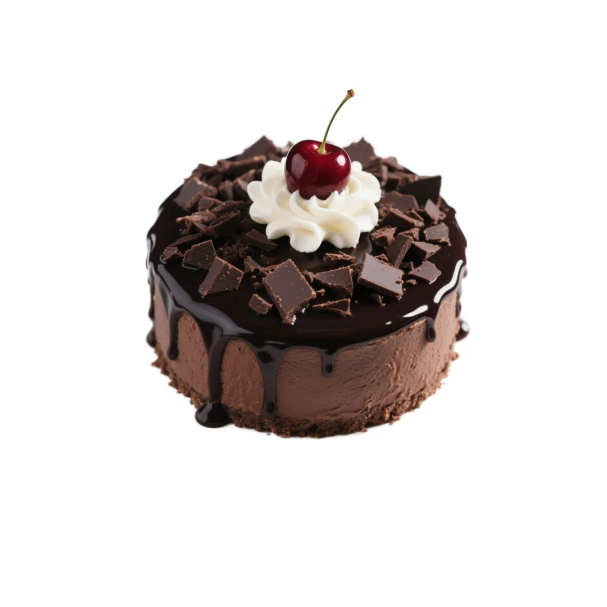
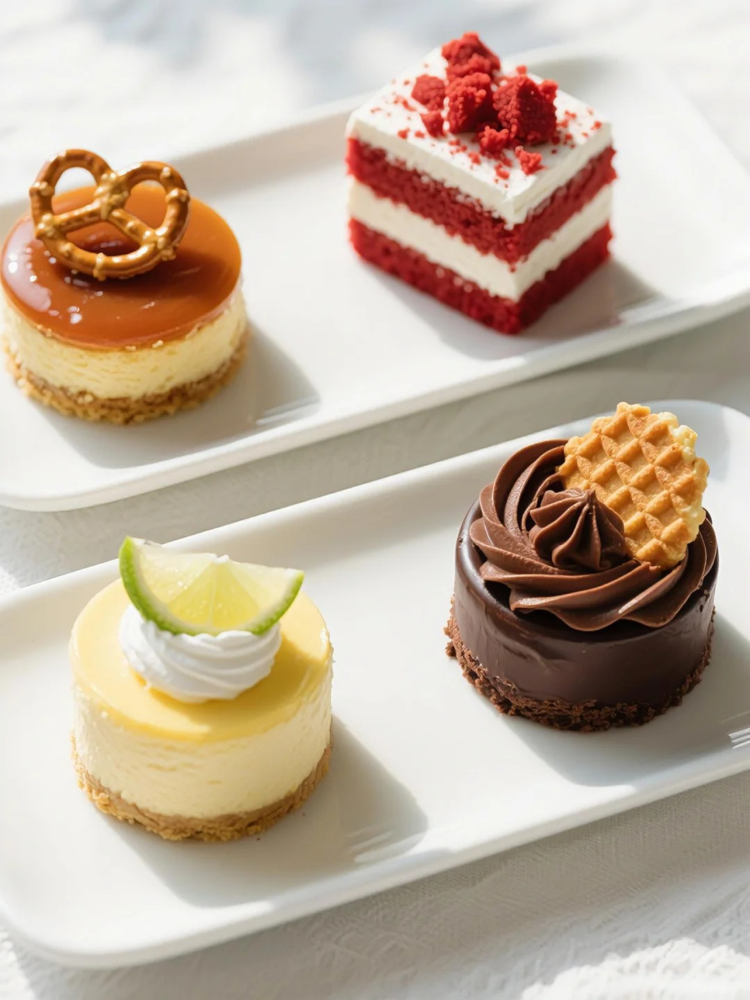

慕斯蛋糕



慕斯蛋糕是一种奶冻式甜点，通常以戚风蛋糕或海绵蛋糕为底，搭配细腻柔滑的慕斯层制作而成。慕斯蛋糕以其轻盈、绵软的口感著称，完美的奶油与果泥比例，使得蛋糕在口腔中轻盈化开，搭配新鲜水果，口感清新宜人。慕斯起源于 18 世纪的法国宫廷，最初是作为配肉吃的咸口开胃菜。19 世纪中期，法国甜点师加入糖渍水果、巧克力等，将其改良为甜点。20 世纪初，冷藏技术的发展促使慕斯蛋糕正式诞生，随后火遍欧洲，成为庆典上的热门甜点。 制作慕斯蛋糕通常需要先准备蛋糕胚，如戚风蛋糕或海绵蛋糕。然后制作慕斯糊，将奶油、糖、明胶（如吉利丁）及蛋黄等原料混合，通过打发、加热、搅拌等操作，使其达到浓稠的冻状。最后将慕斯糊倒入模具中，放入冰箱冷藏至凝固。